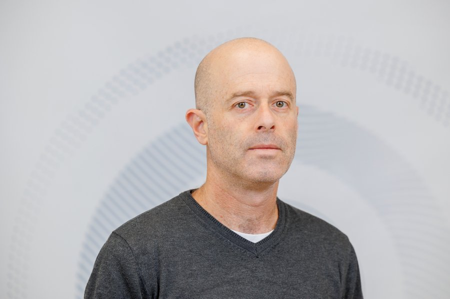

AI INITIATIVES
Bar-Ilan University


Prof. Yaniv Fox
Head of AI Initiatives, Bar-Ilan University
AI Initiatives at Bar-Ilan is a university-wide role for applying generative and agentic AI to research, teaching, and academic administration. It exists to answer a practical question: how should a research university, faculty by faculty and student by student, adopt these tools without undermining the standards that make its work credible?
The role is held by Prof. Yaniv Fox, in the Department of General History. Its remit spans four areas: training and upskilling, drafting institutional policy, representing the university, and publishing applied research on what AI does and doesn't change about scholarly work.